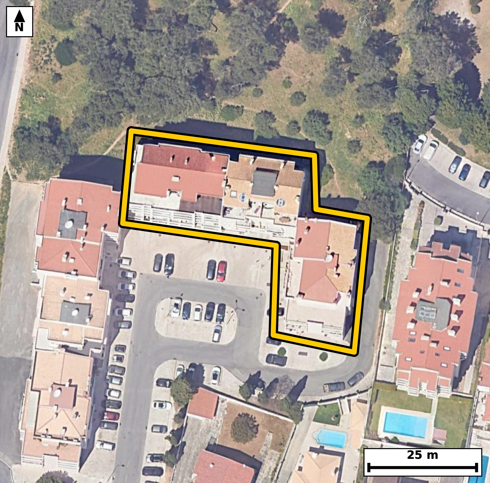

Território 8.07
Deverá devolver o territórioao fim de no máximo 4 meses
Faça scan para abrir no Google Maps
![Código QR para abrir no Google Maps]()